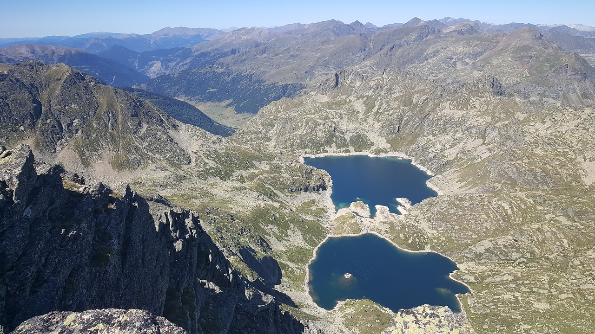
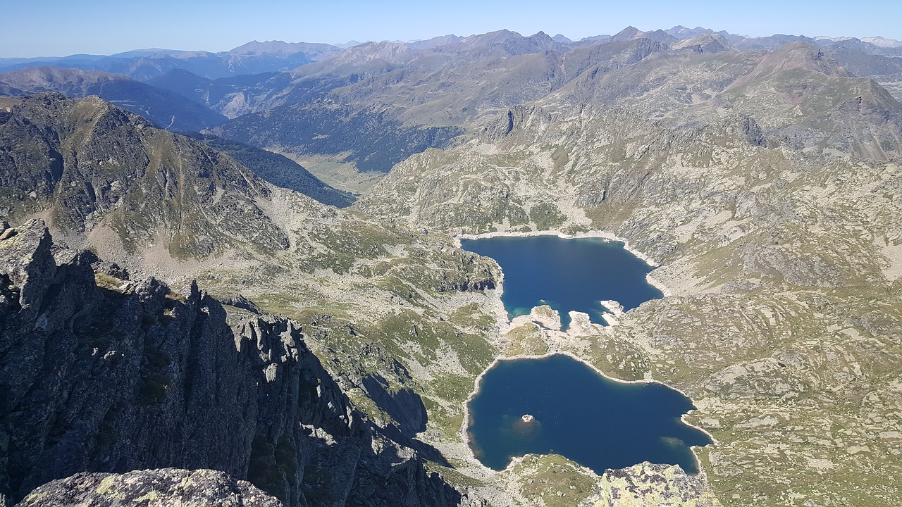

Introducció
El Parc Nacional d'Aigüestortes i Estany de Sant Maurici és un parc nacional de l'Alt Pirineu, l'únic que hi ha a Catalunya. Administrativament està dividit entre les comarques de l'Alta Ribagorça, el Pallars Sobirà, la Vall d'Aran i el Pallars Jussà. Fou declarat parc nacional el 21 d'octubre de 1955, el segon parc nacional dels Pirineus després del d'Ordesa i Mont Perdut. Amb una superfície total de 41.852 ha, és el tercer espai protegit més gran de Catalunya i el cinquè parc nacional més gran d'Espanya. Destaca el seu relleu abrupte, amb valls en forma d'U, circs glacials, estanys, congostos i tarteres, que són l'herència de l'acció erosiva de les glaceres del Quaternari, majoritàriament sobre granit, però també pissarres, esquists i roques calcàries. La major part del parc es troba damunt dels 1.000 msnm, amb alguns pics que superen els 3.000 msnm, entre els quals el més alt és el Comaloforno (3.033 m)
 
